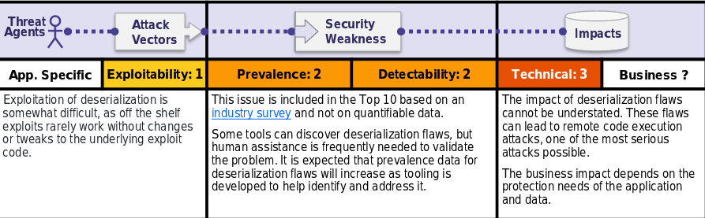

Is the Application Vulnerable?
Applications and APIs will be vulnerable if they deserialize hostile or tampered objects supplied by an attacker.
This can result in two primary types of attacks:
•Object and data structure related attacks where the attacker modifies application logic or achieves arbitrary remote code execution if there are classes available to the application that can change behavior during or after deserialization.
•Typical data tampering attacks, such as access-control-related attacks, where existing data structures are used but the content is changed.
Serialization may be used in applications for:
•Remote-and inter-process communication (RPC/IPC)
•Wire protocols, web services, message brokers
•Caching/Persistence
•Databases, cache servers, file systems
•HTTP cookies, HTML form parameters, API authentication tokens
How to Prevent
The only safe architectural pattern is not to accept serialized objects from untrusted sources or to use serialization mediums that only permit primitive data types.
If that is not possible, consider one of more of the following:
•Implementing integrity checks such as digital signatures on any serialized objects to prevent hostile object creation or data tampering.
•Enforcing strict type constraints during deserialization before object creation as the code typically expects a definable set of classes. Bypasses to this technique have been demonstrated, so reliance solely on this is not advisable.
•Isolating and running code that deserializes in low privilege environments when possible.
•Logging deserialization exceptions and failures, such as where the incoming type is not the expected type, or the deserialization throws exceptions.
•Restricting or monitoring incoming and outgoing network connectivity from containers or servers that deserialize.
•Monitoring deserialization, alerting if a user deserializes constantly.
Example Attack Scenarios
Scenario #1: A React application calls a set of Spring Boot microservices. Being functional programmers, they tried to ensure that their code is immutable. The solution they came up with is serializing user state and passing it back and forth with each request. An attacker notices the "R00" Java object signature, and uses the Java Serial Killer tool to gain remote code execution on the application server.
Scenario #2: A PHP forum uses PHP object serialization to save a "super" cookie, containing the user's user ID, role, password hash, and other state:
a:4:{i:0;i:132;i:1;s:7:"Mallory";i:2;s:4:"user";i:3;s:32:"b6a8b3bea87fe0e05022f8f3c88bc960";}
An attacker changes the serialized object to give themselves admin privileges:
a:4:{i:0;i:1;i:1;s:5:"Alice";i:2;s:5:"admin";i:3;s:32:"b6a8b3bea87fe0e05022f8f3c88bc960";}